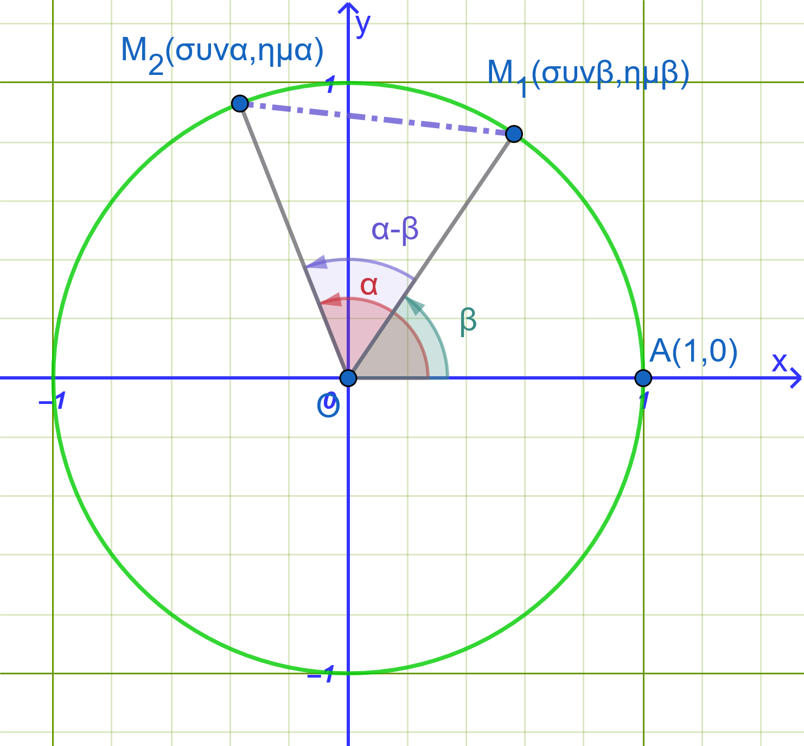
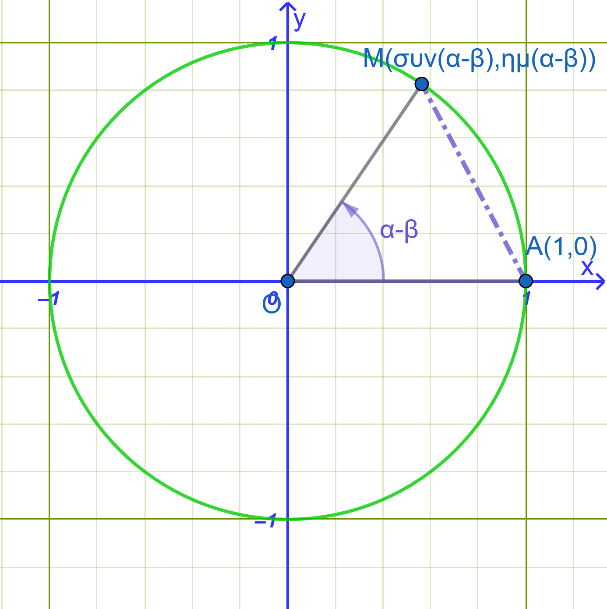

1 Τριγωνομετρικοί αριθμοί αθροίσματος γωνιών
1.1 Συνημίτονο Αθροίσματος και Διαφοράς Γωνιών
Τύποι
Συνημίτονο Διαφοράς: \(συν(α - β) = συνα \cdot συνβ + ημα \cdot ημβ\)
Συνημίτονο Αθροίσματος: \(συν(α + β) = συνα \cdot συνβ - ημα \cdot ημβ\)
Απόδειξη


Θεωρούμε στον τριγωνομετρικό κύκλο τις γωνίες \(α\) και \(β\) με σημείο τομής των τελικών πλευρών τους τα σημεία \(M_1(συνα, ημα)\) και \(M_2(συνβ, ημβ)\) αντίστοιχα (Σχήμα 1).
Η απόσταση των σημείων \(M_1\) και \(M_2\) στο καρτεσιανό επίπεδο δίνεται από τον τύπο της απόστασης: \[(M_1 M_2)^2 = (συνα - συνβ)^2 + (ημα - ημβ)^2\] \[= συν^2α - 2συνασυνβ + συν^2β + ημ^2α - 2ημαημβ + ημ^2β\] \[= (συν^2α + ημ^2α) + (συν^2β + ημ^2β) - 2(συνασυνβ + ημαημβ)\] \[= 1 + 1 - 2(συνασυνβ + ημαημβ) = 2 - 2(συνασυνβ + ημαημβ)\]
Αν περιστρέψουμε το σύστημα αξόνων κατά γωνία \(-β\), η γωνία \(β\) συμπίπτει με τον ημιάξονα \(Ox\) (σημείο \(A(1,0)\)) και η τελική πλευρά της γωνίας \(α\) σχηματίζει πλέον γωνία \(α - β\) με σημείο τομής \(M(συν(α-β), ημ(α-β))\) (Σχήμα 2).
Η απόσταση \((AM)^2\) είναι: \[(AM)^2 = (συν(α-β) - 1)^2 + (ημ(α-β) - 0)^2\] \[= συν^2(α-β) - 2συν(α-β) + 1 + ημ^2(α-β) = 2 - 2συν(α-β)\]
Επειδή η απόσταση μεταξύ των σημείων παραμένει αναλλοίωτη κατά την περιστροφή, ισχύει \((M_1 M_2)^2 = (AM)^2\): \[2 - 2συν(α-β) = 2 - 2(συνασυνβ + ημαημβ)\] \[\mathbf{συν(α - β) = συνα \cdot συνβ + ημα \cdot ημβ}\]
Αντικαθιστώντας στο παραπάνω τύπο το \(β\) με το \(-β\) (αφού \(συν(-β) = συνβ\) και \(ημ(-β) = -ημβ\)): \[συν(α + β) = συν(α - (-β)) = συνασυν(-β) + ημαημ(-β)\] \[\mathbf{συν(α + β) = συνα \cdot συνβ - ημα \cdot ημβ}\]
1.1.1 Παραδείγματα
- Παράδειγμα 1: Υπολογισμός του
\(συν 15^\circ = συν(60^\circ - 45^\circ)\)
Λύση
\[συν 15^\circ = συν(60^\circ - 45^\circ) = συν 60^\circ συν 45^\circ + ημ 60^\circ ημ 45^\circ\] \[= \frac{1}{2} \cdot \frac{\sqrt{2}}{2} + \frac{\sqrt{3}}{2} \cdot \frac{\sqrt{2}}{2} = \mathbf{\frac{\sqrt{2} + \sqrt{6}}{4}}\]
- Παράδειγμα 2: Υπολογισμός του
\(συν 105^\circ = συν(60^\circ + 45^\circ)\)
Λύση
\[συν 105^\circ = συν(60^\circ + 45^\circ) = συν 60^\circ συν 45^\circ - ημ 60^\circ ημ 45^\circ\] \[= \frac{1}{2} \cdot \frac{\sqrt{2}}{2} - \frac{\sqrt{3}}{2} \cdot \frac{\sqrt{2}}{2} = \mathbf{\frac{\sqrt{2} - \sqrt{6}}{4}}\]
1.2 Ημίτονο Αθροίσματος και Διαφοράς Γωνιών
Τύποι
Ημίτονο Αθροίσματος: \(ημ(α + β) = ημα \cdot συνβ + συνα \cdot ημβ\)
Ημίτονο Διαφοράς: \(ημ(α - β) = ημα \cdot συνβ - συνα \cdot ημβ\)
Απόδειξη
Χρησιμοποιούμε τη σχέση συμπληρωματικών γωνιών \(ημ x = συν(90^\circ - x)\): \[ημ(α + β) = συν(90^\circ - (α + β)) = συν((90^\circ - α) - β)\]
Εφαρμόζουμε τον τύπο συνημιτόνου διαφοράς: \[συν((90^\circ - α) - β) = συν(90^\circ - α)συνβ + ημ(90^\circ - α)ημβ\] \[\mathbf{ημ(α + β) = ημα \cdot συνβ + συνα \cdot ημβ}\]
Αντικαθιστώντας το \(β\) με το \(-β\): \[ημ(α - β) = ημ(α + (-β)) = ημασυν(-β) + συναημ(-β)\] \[\mathbf{ημ(α - β) = ημα \cdot συνβ - συνα \cdot ημβ}\]
1.2.1 Παραδείγματα
- Παράδειγμα 1: Υπολογισμός του
\(ημ 15^\circ = ημ(60^\circ - 45^\circ)\)
Λύση
\[ημ 15^\circ = ημ(60^\circ - 45^\circ) = ημ 60^\circ συν 45^\circ - συν 60^\circ ημ 45^\circ\] \[= \frac{\sqrt{3}}{2} \cdot \frac{\sqrt{2}}{2} - \frac{1}{2} \cdot \frac{\sqrt{2}}{2} = \mathbf{\frac{\sqrt{6} - \sqrt{2}}{4}}\]
- Παράδειγμα 2: Υπολογισμός του
\(ημ 105^\circ = ημ(60^\circ + 45^\circ)\)
Λύση
\[ημ 105^\circ = ημ(60^\circ + 45^\circ) = ημ 60^\circ συν 45^\circ + συν 60^\circ ημ 45^\circ\] \[= \frac{\sqrt{3}}{2} \cdot \frac{\sqrt{2}}{2} + \frac{1}{2} \cdot \frac{\sqrt{2}}{2} = \mathbf{\frac{\sqrt{6} + \sqrt{2}}{4}}\]
1.3 Εφαπτομένη Αθροίσματος και Διαφοράς Γωνιών
Τύποι
Εφαπτομένη Αθροίσματος: \(εφ(α + β) = \dfrac{εφα + εφβ}{1 - εφα \cdot εφβ}\)
Εφαπτομένη Διαφοράς: \(εφ(α - β) = \dfrac{εφα - εφβ}{1 + εφα \cdot εφβ}\)
(με τις προϋποθέσεις ότι ορίζονται οι εφαπτόμενες).
Απόδειξη
Με τη βοήθεια των τύπων ημιτόνου και συνημίτονου αθροίσματος: \[εφ(α + β) = \frac{ημ(α + β)}{συν(α + β)} = \frac{ημασυνβ + συναημβ}{συνασυνβ - ημαημβ}\]
Διαιρούμε αριθμητή και παρονομαστή με το γινόμενο \(συνα συνβ \neq 0\): \[εφ(α + β) = \frac{\dfrac{ημασυνβ}{συνασυνβ} + \dfrac{συναημβ}{συνασυνβ}}{\dfrac{συνασυνβ}{συνασυνβ} - \dfrac{ημαημβ}{συνασυνβ}} = \mathbf{\frac{εφα + εφβ}{1 - εφα \cdot εφβ}}\]
Αντικαθιστώντας το \(β\) με το \(-β\) (αφού \(εφ(-β) = -εφβ\)): \[εφ(α - β) = \mathbf{\frac{εφ α - εφβ}{1 + εφα \cdot εφβ}}\]
1.3.1 Παραδείγματα
- Παράδειγμα 1: Υπολογισμός της
\(εφ 15^\circ = εφ(60^\circ - 45^\circ)\)
Λύση
\[εφ 15^\circ = \frac{εφ 60^\circ - εφ 45^\circ}{1 + εφ 60^\circ εφ 45^\circ} = \frac{\sqrt{3} - 1}{1 + \sqrt{3} \cdot 1} = \frac{\sqrt{3} - 1}{\sqrt{3} + 1}\]
Πολλαπλασιάζουμε με τη συζυγή παράσταση \((\sqrt{3}-1)\): \[εφ 15^\circ = \frac{(\sqrt{3}-1)^2}{3-1} = \frac{3 - 2\sqrt{3} + 1}{2} = \mathbf{2 - \sqrt{3}}\]
- Παράδειγμα 2: Υπολογισμός της
\(εφ 105^\circ = εφ(60^\circ + 45^\circ)\)
Λύση
\[εφ 105^\circ = \frac{εφ 60^\circ + εφ 45^\circ}{1 - εφ 60^\circ εφ 45^\circ} = \frac{\sqrt{3} + 1}{1 - \sqrt{3}} = -\frac{\sqrt{3} + 1}{\sqrt{3} - 1} = \mathbf{-2 - \sqrt{3}}\]
1.4 Συνεφαπτομένη Αθροίσματος και Διαφοράς Γωνιών
Τύποι
Συνεφαπτομένη Αθροίσματος: \(σφ(α + β) = \dfrac{σφα \cdot σφβ - 1}{σφβ + σφα}\)
Συνεφαπτομένη Διαφοράς: \(σφ(α - β) = \dfrac{σφα \cdot σφβ + 1}{σφβ - σφα}\)
Απόδειξη
Με τη βοήθεια των τύπων συνημίτονου και ημιτόνου αθροίσματος: \[σφ(α + β) = \frac{συν(α + β)}{ημ(α + β)} = \frac{συνασυνβ - ημαημβ}{ημασυνβ + συναημβ}\]
Διαιρούμε αριθμητή και παρονομαστή με το γινόμενο \(ημα ημβ \neq 0\): \[σφ(α + β) = \frac{\dfrac{συνασυνβ}{ημαημβ} - \dfrac{ημαημβ}{ημαημβ}}{\dfrac{ημασυνβ}{ημαημβ} + \dfrac{συναημβ}{ημαημβ}} = \mathbf{\frac{σφα \cdot σφβ - 1}{σφβ + σφα}}\]
Αντικαθιστώντας το \(β\) με το \(-β\) (αφού \(σφ(-β) = -σφβ\)): \[σφ(α - β) = \mathbf{\frac{σφα \cdot σφβ + 1}{σφβ - σφα}}\]
1.4.1 Παραδείγματα
- Παράδειγμα 1: Υπολογισμός της
\(σφ 15^\circ = σφ(60^\circ - 45^\circ)\)
Λύση
\[σφ 15^\circ = \frac{σφ 60^\circ σφ 45^\circ + 1}{σφ 45^\circ - σφ 60^\circ} = \frac{\dfrac{\sqrt{3}}{3} \cdot 1 + 1}{1 - \dfrac{\sqrt{3}}{3}} = \frac{\sqrt{3} + 3}{3 - \sqrt{3}} = \mathbf{2 + \sqrt{3}}\]
- Παράδειγμα 2: Υπολογισμός της
\(σφ 105^\circ = σφ(60^\circ + 45^\circ)\)
Λύση
\[σφ 105^\circ = \frac{σφ 60^\circ σφ 45^\circ - 1}{σφ 45^\circ + σφ 60^\circ} = \frac{\dfrac{\sqrt{3}}{3} \cdot 1 - 1}{1 + \dfrac{\sqrt{3}}{3}} = \frac{\sqrt{3} - 3}{3 + \sqrt{3}} = \mathbf{\sqrt{3} - 2}\]
1.5 Εφαρμογές
Άσκηση 1: Αριθμητικός Υπολογισμός Παραστάσεων
Να υπολογιστεί η ακριβής τιμή των παραστάσεων χωρίς τη χρήση υπολογιστή:
\(A = ημ 70^\circ \cdot συν 10^\circ - συν 70^\circ \cdot ημ 10^\circ\)
\(B = \dfrac{εφ 20^\circ + εφ 25^\circ}{1 - εφ 20^\circ \cdot εφ 25^\circ}\)
Αναλυτική Λύση:
Για την παράσταση \(A\):
Αναγνωρίζουμε τη μορφή του τύπου του ημιτόνου διαφοράς \(ημασυνβ - συναημβ = ημ(α - β)\) για \(α = 70^\circ\) και \(β = 10^\circ\): \[A = ημ(70^\circ - 10^\circ) = ημ 60^\circ = \mathbf{\frac{\sqrt{3}}{2}}\]Για την παράσταση \(B\):
Αναγνωρίζουμε τη μορφή του τύπου της εφαπτομένης αθροίσματος \(\dfrac{εφα + εφβ}{1 - εφαεφβ} = εφ(α + β)\) για \(α = 20^\circ\) και \(β = 25^\circ\): \[B = εφ(20^\circ + 25^\circ) = εφ 45^\circ = \mathbf{1}\]
Άσκηση 2: Απόδειξη Τριγωνομετρικής Ταυτότητας
Να αποδειχθεί ότι για οποιεσδήποτε γωνίες \(α, β\) για τις οποίες ορίζονται οι παραστάσεις ισχύει: \[\frac{ημ(α + β) + ημ(α - β)}{συν(α + β) + συν(α - β)} = εφα\]
Αναλυτική Λύση:
Αναπτύσσουμε τους όρους στον αριθμητή και στον παρονομαστή του αριστερού μέλους:
Αριθμητής: \[ημ(α + β) + ημ(α - β) = \\ (ημασυνβ + συναημβ) + (ημασυνβ - συναημβ) = 2ημασυνβ\]
Παρονομαστής: \[συν(α + β) + συν(α - β) = \\ (συνασυνβ - ημαημβ) + (συνασυνβ + ημαημβ) = 2συνασυνβ\]
Συνθέτουμε το κλάσμα: \[\frac{\text{Αριθμητής}}{\text{Παρονομαστής}} = \frac{2ημασυνβ}{2συνασυνβ} = \frac{ημα}{συνα} = \mathbf{εφα}\]
Άσκηση 3: Υπολογισμός με Γωνίες σε Διαφορετικά Τεταρτημόρια
Δίνονται οι γωνίες \(α\) και \(β\) με:
\(ημα = \dfrac{4}{5}\), όπου \(\dfrac{\pi}{2} < α < \pi\) (2ο τεταρτημόριο)
\(εφβ = -\dfrac{5}{12}\), όπου \(\dfrac{3\pi}{2} < β < 2\pi\) (4ο τεταρτημόριο)
Να υπολογιστεί το \(συν(α - β)\).
Αναλυτική Λύση:
Υπολογισμός τριγωνομετρικών αριθμών της γωνίας \(α\):
Στο 2ο τεταρτημόριο το συνημίτονο είναι αρνητικό (\(συνα < 0\)): \[συνα = -\sqrt{1 - ημ^2α} = -\sqrt{1 - \left(\frac{4}{5}\right)^2} = -\sqrt{1 - \frac{16}{25}} = -\sqrt{\frac{9}{25}} = \mathbf{-\frac{3}{5}}\]
Υπολογισμός τριγωνομετρικών αριθμών της γωνίας \(β\):
Στο 4ο τεταρτημόριο το συνημίτονο είναι θετικό (\(συνβ > 0\)) και το ημίτονο αρνητικό (\(ημβ < 0\)):
\[συν^2β = \frac{1}{1 + εφ^2β} = \frac{1}{1 + \left(-\dfrac{5}{12}\right)^2} = \frac{1}{1 + \dfrac{25}{144}} = \frac{1}{\dfrac{169}{144}} = \frac{144}{169} \implies συνβ = \mathbf{\frac{12}{13}}\] \[ημβ = εφβ \cdot συνβ = \left(-\frac{5}{12}\right) \cdot \left(\frac{12}{13}\right) = \mathbf{-\frac{5}{13}}\]
- Υπολογισμός του \(συν(α - β)\):
\[συν(α - β) = συνα \cdot συνβ + ημα \cdot ημβ\] \[= \left(-\frac{3}{5}\right) \cdot \left(\frac{12}{13}\right) + \left(\frac{4}{5}\right) \cdot \left(-\frac{5}{13}\right) = -\frac{36}{65} - \frac{20}{65} = \mathbf{-\frac{56}{65}}\]
Άσκηση 4: Εφαρμογή σε Τρίγωνα (Γεωμετρικός Χαρακτηρισμός)
Σε ένα τρίγωνο \(ABC\) ισχύει η σχέση: \[ημ A = 2ημ B \cdot συν C\]
Να αποδειχθεί ότι το τρίγωνο \(ABC\) είναι ισοσκελές.
Αναλυτική Λύση:
Σε κάθε τρίγωνο ισχύει \(A + B + C = 180^\circ \iff A = 180^\circ - (B + C)\).
Άρα: \[ημ A = ημ(180^\circ - (B + C)) = ημ(B + C)\]
Αντικαθιστούμε στην αρχική σχέση: \[ημ(B + C) = 2ημ B \cdot συν C\]
Αναπτύσσουμε το ημίτονο αθροίσματος \(ημ(B + C) = ημ Bσυν C + συν Bημ C\): \[ημ B συν C + συν B ημ C = 2ημ B συν C\] \[συν B ημ C - ημ B συν C = 0\] \[ημ(C - B) = 0\]
Επειδή \(B, C\) είναι γωνίες τριγώνου, ισχύει \(-180^\circ < C - B < 180^\circ\).
Η μοναδική τιμή στο διάστημα αυτό για την οποία μηδενίζεται το ημίτονο είναι: \[C - B = 0 \iff \mathbf{B = C}\]
Συνεπώς, το τρίγωνο \(ABC\) έχει δύο γωνίες ίσες, άρα είναι ισοσκελές με \(AB = AC\).
1.6 Ασκήσεις Εμπέδωσης & Εφαρμογών
Κατηγορία Α: Ασκήσεις Υπολογισμού Τριγωνομετρικών Αριθμών
Να υπολογιστούν οι τριγωνομετρικοί αριθμοί \(ημ 75^\circ\) και \(συν 75^\circ\) αναλύοντας τη γωνία σε \(45^\circ + 30^\circ\).
Να υπολογιστούν οι τριγωνομετρικοί αριθμοί \(εφ 75^\circ\) και \(σφ 75^\circ\).
Αν \(ημα = \dfrac{3}{5}\) με \(α \in \left(0, \dfrac{\pi}{2}\right)\) και \(συνβ = \dfrac{12}{13}\) με \(β \in \left(0, \dfrac{\pi}{2}\right)\), να υπολογιστούν τα \(ημ(α+β)\) και \(συν(α-β)\).
Αν \(εφα = 2\) και \(εφβ = 3\), να υπολογιστούν οι τιμές των παραστάσεων \(εφ(α+β)\) και \(εφ(α-β)\).
Να υπολογιστεί η ακριβής τιμή της παράστασης: \(A = συν 80^\circ \cdot συν 20^\circ + ημ 80^\circ \cdot ημ 20^\circ\).
Κατηγορία Β: Απλοποίηση Παραστάσεων
- Να απλοποιηθεί η παράσταση:
\(B = ημ(x+y)συν y - συν(x+y)ημ y\).
Λύση
Χρήση Τριγωνομετρικής Ταυτότητας
Χρησιμοποιούμε τον τύπο για το ημίτονο της διαφοράς δύο γωνιών: \[ημ(\alpha - \beta) = ημ\alpha \cdot συν\beta - συν\alpha \cdot ημ\beta\]
Θέτοντας:
\(\alpha = x + y\)
\(\beta = y\)
η παράσταση \(B\) παίρνει τη μορφή: \[B = ημ\left[(x + y) - y\right]\]
Απλοποίηση
Εκτελούμε την αφαίρεση μέσα στην παρένθεση: \[B = ημ(x + y - y)\] \[B = ημ x\]
Τελική Απάντηση
\[B = ημ x\]
- Να απλοποιηθεί η παράσταση: \(γ = \dfrac{εφ(x+y) - εφ y}{1 + εφ(x+y)εφ y}\).
Όμοια με την 6.
- Να αποδειχθεί ότι: \(συν\left(x + \dfrac{\pi}{4}\right) + συν\left(x - \dfrac{\pi}{4}\right) = \sqrt{2}συν x\).
Αναπτύξτε τα \(συν\left(x + \dfrac{\pi}{4}\right)\) και \(συν\left(x - \dfrac{\pi}{4}\right)\) και μετά απλοποιήστε.
- Να αποδειχθεί ότι: \(ημ\left(x + \dfrac{\pi}{6}\right) - ημ\left(x - \dfrac{\pi}{6}\right) = συν x\).
Όμοια με την 8.
- Να αποδειχθεί η ισότητα: \(\dfrac{ημ(α+β)}{συνα \cdot συνβ} = εφα + εφβ\).
αναπτύξτε τον αριθμητή και μετά απλοποιήστε.
Κατηγορία Γ: Αποδείξεις Τριγωνομετρικών Ταυτοτήτων
- Να αποδειχθεί ότι: \(ημ(α+β)\cdotημ(α-β) = ημ^2α - ημ^2β = συν^2β - συν^2α\).
Αναπτύξτε τα \(ημ(α+β)\) και \(ημ(α-β) \rightarrow πολλαπλασιάστε \rightarrow απλοποιήστε\)
- Να αποδειχθεί ότι: \(συν(α+β)\cdotσυν(α-β) = συν^2α - ημ^2β\).
Όμοια με την 11.
Να αποδειχθεί η ταυτότητα: \(εφ\left(\dfrac{\pi}{4} + x\right) = \dfrac{1 + εφ x}{1 - εφ x}\).
Να αποδειχθεί ότι: \(\dfrac{συν(α-β) - συν(α+β)}{ημ(α+β) + ημ(α-β)} = εφβ\).
Αναπτύξτε σε αριθμητή και παρονομαστή \(\rightarrow\) απλοποιήστε.
- Να γράψετε σε απλούστερη μορφή τις παραστάσεις:
i) \(\eta\mu(3x)\sigma\upsilon\nu(2x) + \sigma\upsilon\nu(3x)\eta\mu(2x)\)
ii) \(\eta\mu\left(x + \dfrac{\pi}{3}\right)\sigma\upsilon\nu x - \sigma\upsilon\nu\left(x + \dfrac{\pi}{3}\right)\eta\mu x\)
iii) \(\dfrac{\epsilon\phi(3x) - \epsilon\phi x}{1 + \epsilon\phi(3x)\epsilon\phi x}\)
iv) \(\dfrac{\epsilon\phi\left(\dfrac{\pi}{4} + x\right) + \epsilon\phi\left(\dfrac{\pi}{4} - x\right)}{1 - \epsilon\phi\left(\dfrac{\pi}{4} + x\right)\epsilon\phi\left(\dfrac{\pi}{4} - x\right)}\)
Αναλυτικές Λύσεις
i) \(\eta\mu(3x)\sigma\upsilon\nu(2x) + \sigma\upsilon\nu(3x)\eta\mu(2x)\)
Ταυτότητα: \(\eta\mu(\alpha + \beta) = \eta\mu\alpha\sigma\upsilon\nu\beta + \sigma\upsilon\nu\alpha\eta\mu\beta\)
Εφαρμόζουμε για \(\alpha = 3x\) και \(\beta = 2x\): \[\eta\mu(3x + 2x) = \eta\mu(5x)\]
ii) \(\eta\mu\left(x + \dfrac{\pi}{3}\right)\sigma\upsilon\nu x - \sigma\upsilon\nu\left(x + \dfrac{\pi}{3}\right)\eta\mu x\)
Ταυτότητα: \(\eta\mu(\alpha - \beta) = \eta\mu\alpha\sigma\upsilon\nu\beta - \sigma\upsilon\nu\alpha\eta\mu\beta\)
Εφαρμόζουμε για \(\alpha = x + \dfrac{\pi}{3}\) και \(\beta = x\): \[\eta\mu\left[\left(x + \frac{\pi}{3}\right) - x\right] = \eta\mu\left(\frac{\pi}{3}\right) = \frac{\sqrt{3}}{2}\]
iii) \(\dfrac{\epsilon\phi(3x) - \epsilon\phi x}{1 + \epsilon\phi(3x)\epsilon\phi x}\)
Ταυτότητα: \(\epsilon\phi(\alpha - \beta) = \dfrac{\epsilon\phi\alpha - \epsilon\phi\beta}{1 + \epsilon\phi\alpha\epsilon\phi\beta}\)
Εφαρμόζουμε για \(\alpha = 3x\) και \(\beta = x\): \[\epsilon\phi(3x - x) = \epsilon\phi(2x)\]
iv) \(\dfrac{\epsilon\phi\left(\dfrac{\pi}{8} + x\right) + \epsilon\phi\left(\dfrac{\pi}{8} - x\right)}{1 - \epsilon\phi\left(\dfrac{\pi}{8} + x\right)\epsilon\phi\left(\dfrac{\pi}{8} - x\right)}\)
Ταυτότητα: \(\epsilon\phi(\alpha + \beta) = \dfrac{\epsilon\phi\alpha + \epsilon\phi\beta}{1 - \epsilon\phi\alpha\epsilon\phi\beta}\)
Εφαρμόζουμε για \(\alpha = \dfrac{\pi}{8} + x\) και \(\beta = \dfrac{\pi}{8} - x\): \[\epsilon\phi\left[\left(\frac{\pi}{8} + x\right) + \left(\frac{\pi}{8} - x\right)\right] = \epsilon\phi\left(\frac{\pi}{8} + \frac{\pi}{8}\right) = \epsilon\phi\left(\frac{\pi}{4}\right)=1\]
Κατηγορία Δ: Ταυτότητες υπό Συνθήκη
- Αν \(α + β + γ = \pi\) (γωνίες μη ορθογωνίου τριγώνου), να αποδειχθεί ότι:
\(εφα + εφβ + εφγ = εφα \cdot εφβ \cdot εφγ\).
\(α+β+γ=180^ο \implies α+β=180^ο-γ \implies εφ(α+β)=εφ(180^ο-γ) \implies ................\)
- Αν \(α + β + γ = \pi\), να αποδειχθεί ότι:
\(σφα \cdot σφβ + σφβ \cdot σφγ + σφγ \cdot σφα = 1\).
Λύση
Δίνεται ότι: \[\alpha + \beta + \gamma = \pi \implies \alpha + \beta = \pi - \gamma\]
1: Εφαρμογή της συνεφαπτομένης
Παίρνουμε τη συνεφαπτομένη και στα δύο μέλη: \[\sigma\phi(\alpha + \beta) = \sigma\phi(\pi - \gamma)\]
Επειδή οι γωνίες \(\gamma\) και \(\pi - \gamma\) είναι παραπληρωματικές, ισχύει: \[\sigma\phi(\pi - \gamma) = -\sigma\phi\gamma\]
Επομένως: \[\sigma\phi(\alpha + \beta) = -\sigma\phi\gamma\]
2: Ανάπτυξη του τύπου της συνεφαπτομένης αθροίσματος
Γνωρίζουμε τον τριγωνομετρικό τύπο: \[\sigma\phi(\alpha + \beta) = \frac{\sigma\phi\alpha \cdot \sigma\phi\beta - 1}{\sigma\phi\alpha + \sigma\phi\beta}\]
Αντικαθιστούμε στη σχέση: \[\frac{\sigma\phi\alpha \cdot \sigma\phi\beta - 1}{\sigma\phi\alpha + \sigma\phi\beta} = -\sigma\phi\gamma\]
3: Απαλοιφή παρονομαστών και πράξεις
Πολλαπλασιάζουμε χιαστί: \[\sigma\phi\alpha \cdot \sigma\phi\beta - 1 = -\sigma\phi\gamma \cdot (\sigma\phi\alpha + \sigma\phi\beta)\]
Κάνουμε την επιμεριστική ιδιότητα στο δεξί μέλος: \[\sigma\phi\alpha \cdot \sigma\phi\beta - 1 = -\sigma\phi\gamma \cdot \sigma\phi\alpha - \sigma\phi\gamma \cdot \sigma\phi\beta\]
4: Μεταφορά των όρων
Μεταφέρουμε τους αρνητικούς όρους του δεξιού μέλους στο αριστερό και τον αριθμό \(-1\) στο δεξί μέλος: \[\sigma\phi\alpha \cdot \sigma\phi\beta + \sigma\phi\beta \cdot \sigma\phi\gamma + \sigma\phi\gamma \cdot \sigma\phi\alpha = 1\]
Η σχέση αποδείχθηκε.
- Αν \(α + β = \dfrac{\pi}{4}\),
να αποδειχθεί ότι: \((1 + εφα)(1 + εφβ) = 2\).
Λύση
Δίνεται ότι: \[\alpha + \beta = \frac{\pi}{4}\]
1: Εφαρμογή της εφαπτομένης
Παίρνουμε την εφαπτομένη και στα δύο μέλη: \[\epsilon\phi(\alpha + \beta) = \epsilon\phi\left(\frac{\pi}{4}\right)\]
Επειδή \(\epsilon\phi\left(\dfrac{\pi}{4}\right) = 1\), έχουμε: \[\epsilon\phi(\alpha + \beta) = 1\]
2: Χρήση του τύπου της εφαπτομένης αθροίσματος
Αναπτύσσουμε το αριστερό μέλος χρησιμοποιώντας τον τύπο: \[\epsilon\phi(\alpha + \beta) = \frac{\epsilon\phi\alpha + \epsilon\phi\beta}{1 - \epsilon\phi\alpha \cdot \epsilon\phi\beta}\]
Επομένως: \[\frac{\epsilon\phi\alpha + \epsilon\phi\beta}{1 - \epsilon\phi\alpha \cdot \epsilon\phi\beta} = 1\]
Πολλαπλασιάζουμε χιαστί: \[\epsilon\phi\alpha + \epsilon\phi\beta = 1 - \epsilon\phi\alpha \cdot \epsilon\phi\beta\]
Μεταφέρουμε το γινόμενο στο αριστερό μέλος: \[\epsilon\phi\alpha + \epsilon\phi\beta + \epsilon\phi\alpha \cdot \epsilon\phi\beta = 1 \quad \text{(1)}\]
3: Ανάπτυξη του ζητούμενου γινομένου
Αναπτύσσουμε το αριστερό μέλος της σχέσης που θέλουμε να αποδείξουμε: \[(1 + \epsilon\phi\alpha)(1 + \epsilon\phi\beta) = 1 + \epsilon\phi\beta + \epsilon\phi\alpha + \epsilon\phi\alpha \cdot \epsilon\phi\beta\]
Αναδιατάσσουμε τους όρους: \[(1 + \epsilon\phi\alpha)(1 + \epsilon\phi\beta) = 1 + (\epsilon\phi\alpha + \epsilon\phi\beta + \epsilon\phi\alpha \cdot \epsilon\phi\beta)\]
4: Αντικατάσταση
Αντικαθιστούμε από τη σχέση (1) την παράσταση \(\epsilon\phi\alpha + \epsilon\phi\beta + \epsilon\phi\alpha \cdot \epsilon\phi\beta = 1\): \[(1 + \epsilon\phi\alpha)(1 + \epsilon\phi\beta) = 1 + 1 = 2\]
Η σχέση αποδείχθηκε.
- Αν \(εφα = \dfrac{1}{2}\) και \(εφβ = \dfrac{1}{3}\) με \(α, β \in \left(0, \dfrac{\pi}{2}\right)\),
να αποδειχθεί ότι \(α + β = \dfrac{\pi}{4}\).
\(εφ(α+β)=\dfrac{εφα +εφβ}{1-εφα \cdot εφβ}\) Αντικαταστήστε, Λύστε την εξίσωση.
- Αν \(συν(α+β) = 0\),
να αποδειχθεί ότι: \(ημ(α+2β) = ημα\).
Λύση
Δίνεται ότι: \[\sigma\upsilon\nu(\alpha + \beta) = 0\]
1: Ανάλυση της γωνίας \((\alpha + 2\beta)\)
Παρατηρούμε ότι μπορούμε να «σπάσουμε» τη γωνία \((\alpha + 2\beta)\) ως άθροισμα των γωνιών \((\alpha + \beta)\) και \(\beta\): \[\alpha + 2\beta = (\alpha + \beta) + \beta\]
Επομένως, το αριστερό μέλος γράφεται: \[\eta\mu(\alpha + 2\beta) = \eta\mu\left[(\alpha + \beta) + \beta\right]\]
2: Εφαρμογή του τύπου ημιτόνου αθροίσματος
Χρησιμοποιούμε τον τύπο \(\eta\mu(x + y) = \eta\mu x \cdot \sigma\upsilon\nu y + \sigma\upsilon\nu x \cdot \eta\mu y\) για \(x = \alpha + \beta\) και \(y = \beta\): \[\eta\mu\left[(\alpha + \beta) + \beta\right] = \eta\mu(\alpha + \beta) \cdot \sigma\upsilon\nu\beta + \sigma\upsilon\nu(\alpha + \beta) \cdot \eta\mu\beta\]
Επειδή από την υπόθεση είναι \(\sigma\upsilon\nu(\alpha + \beta) = 0\), ο δεύτερος όρος μηδενίζεται: \[\eta\mu(\alpha + 2\beta) = \eta\mu(\alpha + \beta) \cdot \sigma\upsilon\nu\beta + 0 \cdot \eta\mu\beta\] \[\eta\mu(\alpha + 2\beta) = \eta\mu(\alpha + \beta) \cdot \sigma\upsilon\nu\beta \quad \text{(1)}\]
3: Ανάπτυξη του \(\eta\mu(\alpha + \beta)\)
Αναπτύσσουμε το \(\eta\mu(\alpha + \beta)\): \[\eta\mu(\alpha + \beta) = \eta\mu\alpha \cdot \sigma\upsilon\nu\beta + \sigma\upsilon\nu\alpha \cdot \eta\mu\beta\]
Αντικαθιστούμε στη σχέση (1): \[\eta\mu(\alpha + 2\beta) = (\eta\mu\alpha \cdot \sigma\upsilon\nu\beta + \sigma\upsilon\nu\alpha \cdot \eta\mu\beta) \cdot \sigma\upsilon\nu\beta\] \[\eta\mu(\alpha + 2\beta) = \eta\mu\alpha \cdot \sigma\upsilon\nu^2\beta + \sigma\upsilon\nu\alpha \cdot \eta\mu\beta \cdot \sigma\upsilon\nu\beta \quad \text{(2)}\]
4: Αξιοποίηση της υπόθεσης \(\sigma\upsilon\nu(\alpha + \beta) = 0\)
Αναπτύσσουμε την υπόθεση: \[\sigma\upsilon\nu(\alpha + \beta) = 0 \implies \sigma\upsilon\nu\alpha \cdot \sigma\upsilon\nu\beta - \eta\mu\alpha \cdot \eta\mu\beta = 0\] \[\sigma\upsilon\nu\alpha \cdot \sigma\upsilon\nu\beta = \eta\mu\alpha \cdot \eta\mu\beta\]
Πολλαπλασιάζουμε και τα δύο μέλη με \(\eta\mu\beta\): \[\sigma\upsilon\nu\alpha \cdot \eta\mu\beta \cdot \sigma\upsilon\nu\beta = \eta\mu\alpha \cdot \eta\mu^2\beta\]
5: Τελική αντικατάσταση
Αντικαθιστούμε το γινόμενο αυτό στη σχέση (2): \[\eta\mu(\alpha + 2\beta) = \eta\mu\alpha \cdot \sigma\upsilon\nu^2\beta + \eta\mu\alpha \cdot \eta\mu^2\beta\]
Βγάζουμε κοινό παράγοντα το \(\eta\mu\alpha\): \[\eta\mu(\alpha + 2\beta) = \eta\mu\alpha \cdot (\sigma\upsilon\nu^2\beta + \eta\mu^2\beta)\]
Επειδή \(\sigma\upsilon\nu^2\beta + \eta\mu^2\beta = 1\): \[\eta\mu(\alpha + 2\beta) = \eta\mu\alpha \cdot 1 = \eta\mu\alpha\]
Η ισότητα αποδείχθηκε.
Κατηγορία Ε: Ασκήσεις σε Τρίγωνα
- Σε κάθε τρίγωνο \(ABC\), να αποδειχθεί ότι: \(ημ A = ημ B \cdot συν C + συν B \cdot ημ C\).
\(Α+Β+Γ=180^Ο \implies B+Γ=180^ο-Α \implies ημ(Β+Γ)=ημ(180^ο-Α) \implies ...............\)
- Σε κάθε τρίγωνο \(ABC\), να αποδειχθεί ότι: \(συν A = -συν B \cdot συν C + ημ B \cdot ημ C\).
Όμοια με την 21.
- Υπολογίστε τα παρακάτω χωρίς υπολογιστή.
α) \(\sigma\upsilon\nu(45^\circ - x)\sigma\upsilon\nu x - \eta\mu(45^\circ - x)\eta\mu x\)
β) \(\sigma\upsilon\nu^2 15^\circ - \eta\mu^2 15^\circ\)
- Να αποδείξετε ότι:
α) \[\eta\mu(60^\circ - x) + \eta\mu(60^\circ + x) = \sqrt{3}\sigma\upsilon\nu x\]
β) Στη συνέχεια, να υπολογίσετε την τιμή της παράστασης \(\eta\mu 15^\circ + \eta\mu 105^\circ\) χωρίς τη χρήση υπολογιστή τσέπης.
γ) Να χρησιμοποιήσετε υπολογιστή τσέπης για να επαληθεύσετε την απάντησή σας.
- Να απλοποιήσετε την παρακάτω παράσταση χωρίς τη χρήση υπολογιστή τσέπης:
\[\frac{\eta\mu p \cdot \sigma\upsilon\nu(45^\circ - p) + \sigma\upsilon\nu p \cdot \eta\mu(45^\circ - p)}{\sigma\upsilon\nu p \cdot \sigma\upsilon\nu(60^\circ - p) - \eta\mu p \cdot \eta\mu(60^\circ - p)}\]
Αναπτύξτε και κάντε απλοποιήσεις σε αριθμητή και παρονομαστή.
- Σε ένα μη ορθογώνιο τρίγωνο \(ABC\) ισχύουν οι σχέσεις:
\[\epsilon\phi A + \epsilon\phi B = 2\sigma\phi C \quad \text{και} \quad \epsilon\phi A \cdot \epsilon\phi B = 3\]
Να αποδείξετε ότι η γωνία \(\hat{C}\) ισούται με \(45^\circ\) (\(\hat{C} = \dfrac{\pi}{4}\)).
Λύση
Σε κάθε τρίγωνο \(ABC\) ισχύει: \[A + B + C = 180^\circ \implies A + B = 180^\circ - C\]
1: Χρήση της εφαπτομένης αθροίσματος
Παίρνουμε την εφαπτομένη και στα δύο μέλη: \[\epsilon\phi(A + B) = \epsilon\phi(180^\circ - C)\]
Επειδή \(\epsilon\phi(180^\circ - C) = -\epsilon\phi C\), έχουμε: \[\frac{\epsilon\phi A + \epsilon\phi B}{1 - \epsilon\phi A \cdot \epsilon\phi B} = -\epsilon\phi C\]
2: Αντικατάσταση των δεδομένων
Αντικαθιστούμε τα δεδομένα της εκφώνησης:
\(\epsilon\phi A + \epsilon\phi B = 2\sigma\phi C\)
\(\epsilon\phi A \cdot \epsilon\phi B = 3\)
στην παραπάνω σχέση: \[\frac{2\sigma\phi C}{1 - 3} = -\epsilon\phi C\] \[\frac{2\sigma\phi C}{-2} = -\epsilon\phi C\] \[-\sigma\phi C = -\epsilon\phi C\]
Πολλαπλασιάζουμε με \(-1\): \[\sigma\phi C = \epsilon\phi C\]
3: Υπολογισμός της γωνίας \(\hat{C}\)
Γνωρίζουμε ότι \(\sigma\phi C = \dfrac{1}{\epsilon\phi C}\). Αντικαθιστούμε: \[\frac{1}{\epsilon\phi C} = \epsilon\phi C\] \[\epsilon\phi^2 C = 1\]
Άρα: \[\epsilon\phi C = 1 \quad \text{ή} \quad \epsilon\phi C = -1\]
Εξετάζουμε τις δύο περιπτώσεις για γωνία τριγώνου (\(0^\circ < C < 180^\circ\)):
Αν \(\epsilon\phi C = 1\):
\[C = 45^\circ\]Αν \(\epsilon\phi C = -1\):
\[C = 135^\circ\]Αν όμως \(C = 135^\circ\), τότε \(\sigma\phi C = -1\).
Από τη δοθείσα σχέση θα είχαμε: \[\epsilon\phi A + \epsilon\phi B = 2\sigma\phi C = 2(-1) = -2 < 0\]
Επίσης δίνεται ότι \(\epsilon\phi A \cdot \epsilon\phi B = 3 > 0\).
Δύο αριθμοί με θετικό γινόμενο (\(3\)) και αρνητικό άθροισμα (\(-2\)) πρέπει να είναι και οι δύο αρνητικοί: \[\epsilon\phi A < 0 \quad \text{και} \quad \epsilon\phi B < 0\]
Αυτό σημαίνει ότι και οι δύο γωνίες \(A\) και \(B\) θα ήταν αμβλείες (\(> 90^\circ\)).
Αυτό είναι άτοπο, διότι ένα τρίγωνο δεν μπορεί να έχει δύο (πόσο μάλλον τρεις) αμβλείες γωνίες.
Συμπέρασμα
Η μοναδική δεκτή τιμή είναι: \[\epsilon\phi C = 1 \implies \hat{C} = 45^\circ\]
- Να αποδείξετε ότι:
α) \[\eta\mu(A + B) - \eta\mu(A - B) = 2\sigma\upsilon\nu A \cdot \eta\mu B\]
β) Στη συνέχεια, να υπολογίσετε την τιμή του \(\sigma\upsilon\nu 75^\circ \cdot \eta\mu 15^\circ\) χωρίς τη χρήση υπολογιστή τσέπης.
Κατηγορία ΣΤ: Τριγωνομετρικές Εξισώσεις
- Να λυθεί η εξίσωση: \(ημ\left(x + \dfrac{\pi}{3}\right) = συν x\).
\(ημ\left(x + \dfrac{\pi}{3}\right) = συν x \implies συν\left(\dfrac{π}{2}-\left(x + \dfrac{\pi}{3}\right)\right)=συνx \implies ..........................\)
Να λυθεί η εξίσωση: \(εφ\left(x + \dfrac{\pi}{4}\right) = \sqrt{3}\).
Να λυθεί η εξίσωση: \(ημ(3x)συν x - συν(3x)ημ x = \dfrac{1}{2}\).
Να λυθεί η εξίσωση: \(συν(2x)συν x + ημ(2x)ημ x = \dfrac{\sqrt{3}}{2}\).
Να λυθεί η εξίσωση: \(εφ x + εφ\left(x + \dfrac{\pi}{4}\right) = 0\).
2 ΔΙΑΓΩΝΙΣΜΑ ΑΞΙΟΛΟΓΗΣΗΣ: ΤΡΙΓΩΝΟΜΕΤΡΙΚΟΙ ΑΡΙΘΜΟΙ ΑΘΡΟΙΣΜΑΤΟΣ & ΔΙΑΦΟΡΑΣ ΓΩΝΙΩΝ
Μάθημα: Άλγεβρα Β’ Γενικού Λυκείου
Διάρκεια: 60 λεπτά
2.1 ΘΕΜΑ Α (Θεωρία & Ερωτήσεις Κατανόησης - 25 Μονάδες)
Α1. 1. Να αποδείξετε ότι για δύο γωνίες \(α, β\) με \(συνασυνβ \neq 0\) και \(συν(α+β) \neq 0\) ισχύει ο τύπος: \[εφ(α + β) = \frac{εφα + εφβ}{1 - εφα \cdot εφβ}\] (7 μονάδες)
- Να γράψετε τους τύπους για το ημίτονο αθροίσματος \(ημ(α+β)\) και το συνημίτονο διαφοράς \(συν(α-β)\). (3 μονάδες)
Α2. Να χαρακτηρίσετε τις παρακάτω προτάσεις ως Σωστό (Σ) ή Λάθος (Λ): (10 μονάδες)
Για οποιεσδήποτε γωνίες \(α, β\) ισχύει ότι \(συν(α - β) = συνα συνβ - ημα ημβ\).
Ισχύει ότι \(ημ(α + β) = ημα συνβ + συνα ημβ\) για κάθε \(α, β \in \mathbb{R}\).
Η τιμή της εφαπτομένης \(εφ 15^\circ\) ισούται με \(2 - \sqrt{3}\).
Για κάθε γωνία \(x\) ισχύει ότι \(συν\left(x + \dfrac{\pi}{4}\right) + συν\left(x - \dfrac{\pi}{4}\right) = \sqrt{2}συν x\).
Σε κάθε μη ορθογώνιο τρίγωνο \(ABC\) ισχύει πάντοτε \(εφ A + εφ B + εφ C = εφ A \cdot εφ B \cdot εφ C\).
Α3. Να συμπληρώσετε τα κενά ώστε να προκύψουν αληθείς ισότητες: (5 μονάδες)
α) \(ημα συνβ - συνα ημβ = \text{...........}\)
β) \(σφ(α - β) = \text{...........}\)
2.2 ΘΕΜΑ Β (Υπολογισμοί & Εφαρμογές Τύπων - 25 Μονάδες)
Β1. Να υπολογίσετε την ακριβή τιμή των παραστάσεων:
\(A = συν 105^\circ\) (6 μονάδες)
\(B = συν 70^\circ \cdot συν 10^\circ + ημ 70^\circ \cdot ημ 10^\circ\) (6 μονάδες)
Β2. Δίνονται οι γωνίες \(α, β\) με \(ημα = \dfrac{3}{5}\) (όπου \(0 < α < \dfrac{\pi}{2}\)) και \(συνβ = -\dfrac{5}{13}\) (όπου \(\dfrac{\pi}{2} < β < \pi\)).
Να υπολογίσετε το \(συνα\) και το \(ημβ\). (6 μονάδες)
Να υπολογίσετε τις τιμές των \(ημ(α + β)\) και \(συν(α + β)\). (7 μονάδες)
2.3 ΘΕΜΑ Γ (Αποδείξεις Ταυτοτήτων & Εξισώσεις - 25 Μονάδες)
Γ1. Να αποδείξετε ότι για οποιεσδήποτε γωνίες \(α, β\) ισχύει η ταυτότητα: \[ημ(α + β) \cdot ημ(α - β) = ημ^2α - ημ^2β\] (12 μονάδες)
Γ2. Να λυθεί στο \(\mathbb{R}\) η εξίσωση: \[ημ\left(x + \frac{\pi}{6}\right) = συν x\] (13 μονάδες)
2.4 ΘΕΜΑ Δ (Τρίγωνα & Σύνθετη Εφαρμογή - 25 Μονάδες)
Δ1. Σε κάθε μη ορθογώνιο τρίγωνο \(ABC\), να αποδείξετε ότι ισχύει η σχέση: \[εφ A + εφ B + εφ C = εφ A \cdot εφ B \cdot εφ C\] (12 μονάδες)
Δ2. Δίνονται οι οξείες γωνίες \(α, β \in \left(0, \dfrac{\pi}{2}\right)\) για τις οποίες ισχύει \(εφα = \dfrac{1}{2}\) και \(εφβ = \dfrac{1}{3}\).
Να υπολογίσετε την εφαπτομένη \(εφ(α + β)\). (6 μονάδες)
Να αποδείξετε ότι \(α + β = \dfrac{\pi}{4}\). (7 μονάδες)
3 ΑΝΑΛΥΤΙΚΕΣ ΛΥΣΕΙΣ ΔΙΑΓΩΝΙΣΜΑΤΟΣ
3.1 ΘΕΜΑ Α
Α1.1: Με τη βοήθεια των τύπων ημιτόνου και συνημίτονου αθροίσματος: \[εφ(α + β) = \frac{ημ(α + β)}{συν(α + β)} = \frac{ημασυνβ + συναημβ}{συνασυνβ - ημαημβ}\]
Διαιρούμε αριθμητή και παρονομαστή με το \(συνασυνβ \neq 0\): \[εφ(α + β) = \dfrac{\dfrac{ημασυνβ}{συνασυνβ} + \dfrac{συναημβ}{συνασυνβ}}{\dfrac{συνασυνβ}{συνασυνβ} - \dfrac{ημαημβ}{συνασυνβ}} = \frac{εφα + εφβ}{1 - εφα \cdot εφβ}\]
Α1.2:
\(ημ(α + β) = ημασυνβ + συναημβ\)
\(συν(α - β) = συνασυνβ + ημαημβ\)
Α2:
Λάθος (το σωστό είναι \(συν(α - β) = συνασυνβ + ημαημβ\)).
Σωστό (είναι ο βασικός τύπος ημιτόνου αθροίσματος).
Σωστό (\(εφ 15^\circ = εφ(60^\circ - 45^\circ) = \dfrac{\sqrt{3}-1}{1+\sqrt{3}} = 2 - \sqrt{3}\)).
Σωστό (διότι \(συν(x+\dfrac{\pi}{4}) + συν(x-\dfrac{\pi}{4}) = συν x \dfrac{\sqrt{2}}{2} - ημ x \dfrac{\sqrt{2}}{2} + συν x \dfrac{\sqrt{2}}{2} + ημ x \dfrac{\sqrt{2}}{2} = \sqrt{2}συν x\)).
Σωστό (βασική ταυτότητα σε μη ορθογώνιο τρίγωνο).
Α3:
α) \(ημ(α - β)\)
β) \(\dfrac{σφα \cdot σφβ + 1}{σφβ - σφα}\)
3.2 ΘΕΜΑ Β
Β1.1: Αναλύουμε τη γωνία \(105^\circ = 60^\circ + 45^\circ\):
\[συν 105^\circ = συν(60^\circ + 45^\circ) = συν 60^\circ συν 45^\circ - ημ 60^\circ ημ 45^\circ\] \[= \frac{1}{2} \cdot \frac{\sqrt{2}}{2} - \frac{\sqrt{3}}{2} \cdot \frac{\sqrt{2}}{2} = \mathbf{\frac{\sqrt{2} - \sqrt{6}}{4}}\]
Β1.2: Εφαρμόζουμε τον τύπο συνημίτονου διαφοράς \(συνασυνβ + ημαημβ = συν(α-β)\):
\[B = συν 70^\circ συν 10^\circ + ημ 70^\circ ημ 10^\circ = συν(70^\circ - 10^\circ) = συν 60^\circ = \mathbf{\frac{1}{2}}\]
Β2.1:
Επειδή \(0 < α < \dfrac{\pi}{2}\) (1ο τεταρτημόριο): \[συνα = +\sqrt{1 - ημ^2α} = \sqrt{1 - \left(\frac{3}{5}\right)^2} = \sqrt{1 - \frac{9}{25}} = \sqrt{\frac{16}{25}} = \mathbf{\frac{4}{5}}\]
Επειδή \(\dfrac{\pi}{2} < β < \pi\) (2ο τεταρτημόριο), το ημίτονο είναι θετικό: \[ημβ = +\sqrt{1 - συν^2β} = \sqrt{1 - \left(-\frac{5}{13}\right)^2} = \sqrt{1 - \frac{25}{169}} = \sqrt{\frac{144}{169}} = \mathbf{\frac{12}{13}}\]
Β2.2:
\(ημ(α + β) = ημασυνβ + συναημβ = \left(\dfrac{3}{5}\right)\left(-\dfrac{5}{13}\right) + \left(\dfrac{4}{5}\right)\left(\dfrac{12}{13}\right) = -\dfrac{15}{65} + \dfrac{48}{65} = \mathbf{\dfrac{33}{65}}\)
\(συν(α + β) = συνασυνβ - ημαημβ = \left(\dfrac{4}{5}\right)\left(-\dfrac{5}{13}\right) - \left(\dfrac{3}{5}\right)\left(\dfrac{12}{13}\right) = -\dfrac{20}{65} - \dfrac{36}{65} = \mathbf{-\dfrac{56}{65}}\)
3.3 ΘΕΜΑ Γ
Γ1: Αναπτύσσουμε το αριστερό μέλος: \[ημ(α + β)ημ(α - β) = (ημασυνβ + συναημβ)(ημασυνβ - συναημβ)\]
Χρησιμοποιούμε τη διαφορά τετραγώνων: \[= ημ^2ασυν^2β - συν^2αημ^2β\]
Αντικαθιστούμε \(συν^2β = 1 - ημ^2β\) και \(συν^2α = 1 - ημ^2α\): \[= ημ^2α(1 - ημ^2β) - (1 - ημ^2α)ημ^2β\] \[= ημ^2α - ημ^2αημ^2β - ημ^2β + ημ^2αημ^2β = \mathbf{ημ^2α - ημ^2β}\]
Γ2: Μετασχηματίζουμε το δεξί μέλος σε ημίτονο συμπληρωματικής γωνίας: \(συν x = ημ\left(\dfrac{\pi}{2} - x\right)\).
Η εξίσωση γίνεται \(ημ\left(x + \dfrac{\pi}{6}\right) = ημ\left(\dfrac{\pi}{2} - x\right)\):
1η περίπτωση: \[x + \frac{\pi}{6} = 2k\pi + \frac{\pi}{2} - x \iff 2x = 2k\pi + \frac{\pi}{2} - \frac{\pi}{6} \iff \\ 2x = 2k\pi + \frac{\pi}{3} \iff \mathbf{x = k\pi + \frac{\pi}{6}}, \ k \in \mathbb{Z}\]
2η περίπτωση: \[x + \frac{\pi}{6} = 2k\pi + \pi - \left(\frac{\pi}{2} - x\right) \iff x + \frac{\pi}{6} = 2k\pi + \frac{\pi}{2} + x \iff \frac{\pi}{6} = \frac{\pi}{2} \quad (\text{Αδύνατη})\]
Άρα οι λύσεις είναι οι \(x = k\pi + \dfrac{\pi}{6}, \ k \in \mathbb{Z}\).
3.4 ΘΕΜΑ Δ
Δ1: Σε κάθε τρίγωνο ισχύει \(A + B + C = \pi \iff A + B = \pi - C\).
Παίρνουμε την εφαπτομένη και στα δύο μέλη: \[εφ(A + B) = εφ(\pi - C) \iff \frac{εφ A + εφ B}{1 - εφ A \cdot εφ B} = -εφ C\]
Πολλαπλασιάζουμε χιαστί: \[εφ A + εφ B = -εφ C \cdot (1 - εφ A \cdot εφ B)\] \[εφ A + εφ B = -εφ C + εφ A \cdot εφ B \cdot εφ C\]
Μεταφέροντας το \(-εφ C\) στο αριστερό μέλος: \[\mathbf{εφ A + εφ B + εφ C = εφ A \cdot εφ B \cdot εφ C}\]
Δ2.1: Εφαρμόζουμε τον τύπο εφαπτομένης αθροίσματος:
\[εφ(α + β) = \frac{εφα + εφβ}{1 - εφα \cdot εφβ} = \frac{\dfrac{1}{2} + \dfrac{1}{3}}{1 - \dfrac{1}{2} \cdot \dfrac{1}{3}} = \frac{\dfrac{5}{6}}{1 - \dfrac{1}{6}} = \frac{\dfrac{5}{6}}{\dfrac{5}{6}} = \mathbf{1}\]
Δ2.2: Επειδή \(α, β \in \left(0, \dfrac{\pi}{2}\right)\), προσθέτοντας τις ανισότητες προκύπτει:
\[0 < α + β < \pi\]
Στο διάστημα \((0, \pi)\), η μοναδική γωνία της οποίας η εφαπτομένη ισούται με \(1\) είναι η \(\dfrac{\pi}{4}\) (\(45^\circ\)).
Επειδή \(εφ(α + β) = 1\), συμπεραίνουμε ότι \(α + β = \dfrac{\pi}{4}\).
ΚΑΛΗ ΜΕΛΕΤΗ!